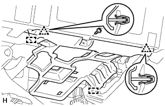
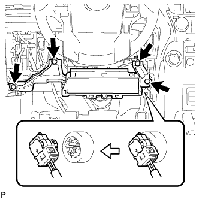
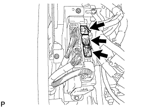
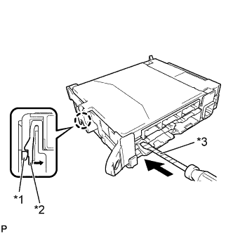
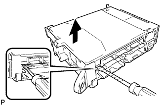
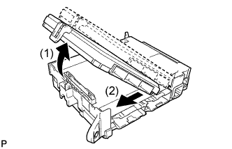

ГЛАВНЫЙ ЭБУ КУЗОВА > СНЯТИЕ |
| 1. ОТСОЕДИНИТЕ ПРОВОД ОТ ОТРИЦАТЕЛЬНОГО ВЫВОДА АККУМУЛЯТОРНОЙ БАТАРЕИ |
| 2. СНИМИТЕ ОПОРНУЮ НАКЛАДКУ ЛЕВОЙ ДВЕРИ В СБОРЕ |
Для 5-дверных моделей:
Снимите опорную накладку левой двери в сборе (Нажмите здесь).
Для 3-дверных моделей:
Снимите опорную накладку левой двери в сборе (Нажмите здесь).
| 3. СНИМИТЕ БОКОВУЮ ОБЛИЦОВОЧНУЮ НАКЛАДКУ С ЛЕВОЙ СТОРОНЫ КОЖУХА |
Для 5-дверных моделей:
Снимите левую боковую облицовочную накладку кожуха (Нажмите здесь).
Для 3-дверных моделей:
Снимите левую боковую облицовочную накладку кожуха (Нажмите здесь).
| 4. СНИМИТЕ НИЖНЮЮ КРЫШКУ ПАНЕЛИ ПРИБОРОВ № 1 В СБОРЕ |
|  |
Для моделей с левосторонним рулевым управлением:
Выверните винт.
Освободите 2 фиксатора и 2 направляющих и снимите нижнюю крышку панели приборов № 1.
 |
Для моделей с правосторонним рулевым управлением:
Выверните винт.
Освободите 3 фиксатора и 2 направляющих и снимите нижнюю крышку панели приборов № 1.
| 5. СНИМИТЕ ЛЕВУЮ БОКОВУЮ ПАНЕЛЬ ПРИБОРОВ |
 |
Наклейте защитную ленту вокруг боковой панели приборов.
| *1 | Защитная клейкая лента |
С помощью съемника молдингов отцепите 5 фиксаторов, захват и 3 направляющих и снимите боковую панель приборов.
| 6. СНИМИТЕ ДЕКОРАТИВНЫЙ ЭЛЕМЕНТ ОБЛИЦОВКИ ПАНЕЛИ УПРАВЛЕНИЯ (для моделей с левосторонним рулевым управлением) |
 |
Наложите защитную ленту вокруг декоративного элемента отделочной накладки панели приборов.
| *1 | Защитная клейкая лента |
С помощью съемника молдингов освободите 3 фиксатора и снимите декоративный элемент отделочной накладки панели приборов.
| 7. СНИМИТЕ ОБЛИЦОВКУ ОТДЕЛОЧНОЙ НАКЛАДКИ ПАНЕЛИ ПРИБОРОВ (для моделей с правосторонним рулевым управлением) |
 |
Освободите 4 фиксатора.
Отсоедините все разъемы и снимите облицовку отделочной накладки панели приборов.
| 8. СНИМИТЕ НИЖНЮЮ ОТДЕЛОЧНУЮ НАКЛАДКУ ПАНЕЛИ ПРИБОРОВ В СБОРЕ |
 |
Освободите 4 фиксатора.
Отсоедините все разъемы и снимите отделочную накладку панели приборов.
| 9. СНИМИТЕ НИЖНЮЮ ОТДЕЛОЧНУЮ НАКЛАДКУ ПАНЕЛИ ПРИБОРОВ В СБОРЕ |
 |
С помощью отвертки освободите 2 захвата и откройте крышку.
| *1 | Защитная клейкая лента |
 |
Для моделей без подушки безопасности для защиты коленей:
Выверните 2 болта <C>.
Освободите 7 фиксаторов.
Отсоедините все разъемы и все кабели и снимите нижнюю отделочную накладку панели приборов.
 |
Для моделей с подушкой безопасности для защиты коленей:
Выверните 2 болта <C>.
Освободите 14 фиксаторов.
Отсоедините все разъемы и все кабели и снимите нижнюю отделочную накладку панели приборов.
| 10. СНИМИТЕ ПОДУШКУ БЕЗОПАСНОСТИ № 1 ДЛЯ ЗАЩИТЫ КОЛЕНЕЙ В СБОРЕ (для моделей с подушкой безопасности для защиты коленей) |
|  |
Выверните 4 болта и снимите подушку безопасности в сборе.
Отсоедините разъем.
| 11. СНИМИТЕ РАСПРЕДЕЛИТЕЛЬНЫЙ БЛОК СО СТОРОНЫ ВОДИТЕЛЯ В СБОРЕ |
|  |
Отсоедините 3 разъема.
 |
Открепите 2 захвата и отсоедините 2 разъема (1), как показано на рисунке.
Отсоедините разъем (2).
 |
Выверните болт, отверните 2 гайки и отсоедините распределительный блок со стороны водителя в сборе.
 |
Открепите захват и отсоедините разъем, как показано на рисунке.
 |
Открепите 2 захвата и освободите защелку разъема, как показано на рисунке.
 |
Открепите захват и отсоедините разъем, как показано на рисунке.
Снимите распределительный блок со стороны водителя в сборе.
| 12. СНИМИТЕ БОРТОВОЙ ЭБУ СЕТИ МУЛЬТИПЛЕКСНОЙ СВЯЗИ |
|  |
Нажмите на захват распределительного блока, как показано на рисунке, и освободите защелку.
| *1 | Бортовой ЭБУ сети мультиплексной связи |
| *2 | Распределительный блок со стороны водителя |
| *3 | Защитная клейкая лента |
Когда защелка распределительного блока освобождена, вставьте отвертку с обернутым лентой концом горизонтально между бортовым ЭБУ сети мультиплексной связи и распределительным блоком.
|  |
С помощью отвертки аккуратно поднимите бортовой ЭБУ сети мультиплексной связи так, чтобы разъем вышел из зацепления.
|  |
Поднимите бортовой ЭБУ сети мультиплексной связи, как указано на рисунке стрелкой (1), и затем вытяните его в направлении, указанном на рисунке стрелкой (2).